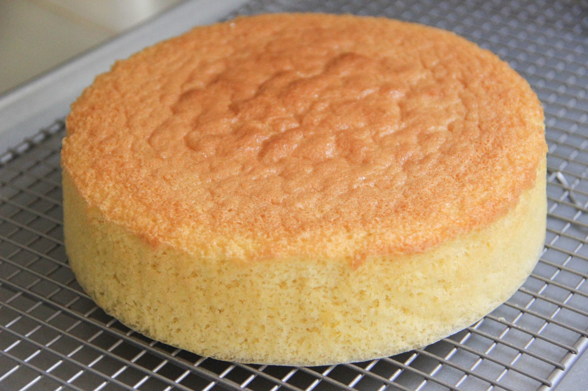

Sponge Cake Recipe

Image of sponge cake
Ingredients
- 125g/4oz butter or margarine, softened, plus extra for greasing
- 125g/4oz caster sugar
- 2 medium free-range eggs
- 125g/4oz self raising flour
- jam, lemon curd or whipped cream and berries, to serve
Instructions
- THeat the oven to 180C/160C Fan/Gas 4. Grease two 18cm/7in cake tins and line the bases with baking paper.
- Cream the butter and the sugar together until pale and fluffy. This will take a few minutes using an electric mixer. Beat in the eggs, one at a time, beating well between each addition.
- Sift over the flour and fold in using a large metal spoon.
- The mixture should be of a dropping consistency (see recipe tips); if it is not, stir in a little milk.
- Divide the mixture between the cake tins and gently spread out with a spatula. Bake for 20-25 minutes, or until an inserted skewer comes out clean. Allow to stand for 5 minutes before turning on to a wire rack to cool completely.
- Sandwich the cakes together with jam, lemon curd or whipped cream and berries or just enjoy on its own.